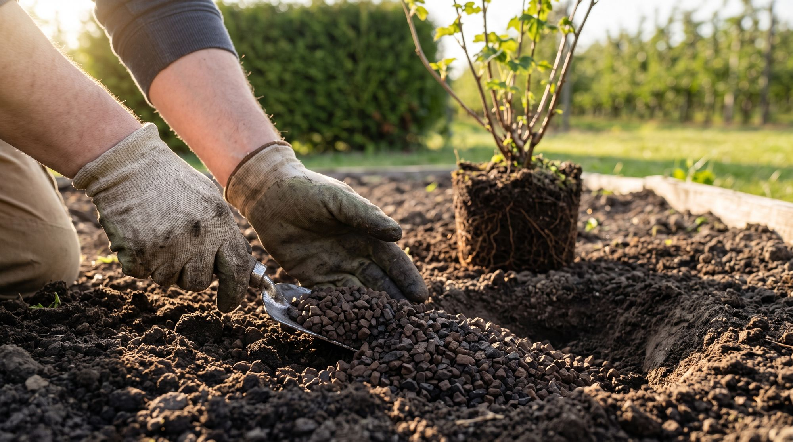
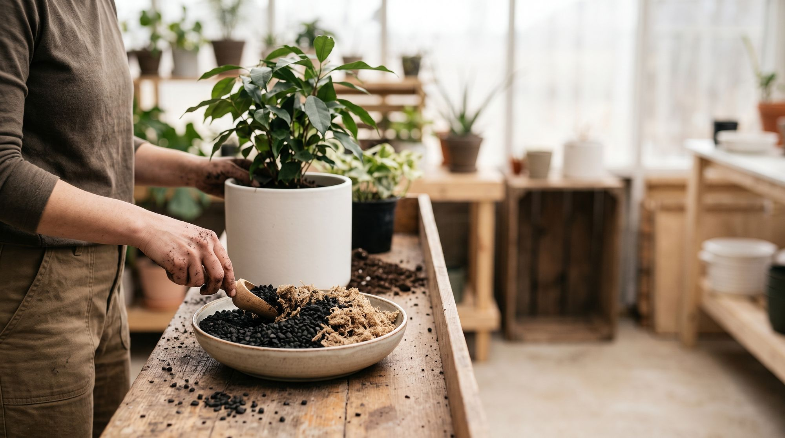

Dodatek do gleby



Powierzchniowo: Wymieszaj z glebą lub innymi składnikami w ilości 10–15% objętości gleby z warstwy ornej lub całego przygotowanego podłoża. Dobieraj frakcje wedle uznania; dla gleb lekkich, piaszczystych stosuj drobniejszą, a dla cięższych gliniastych grubszą.
Punktowo: Stosuj pod rozsadę lub pod goły korzeń w trakcie sadzenia i przemieszaj z glebą. Ilość produktu zależna od wielkości i długości życia rośliny. Dla małych jednorocznych (pomidor, papryka, ogórek) ok. 100–200 ml, dla krzewów i bylin 1–3 l, dla drzew sadowniczych 3–8 l jako starter. Co do zasady im więcej przygotujemy wartościowego podłoża, tym bujniej rozrośnie się korzeń.
- Stosuj jako 10–20% udział mieszanki gotowego podłoża. Wymieszaj równomiernie.
- Zastosuj w formie wartościowego drenażu na spodzie doniczki, grubość około 5 cm.